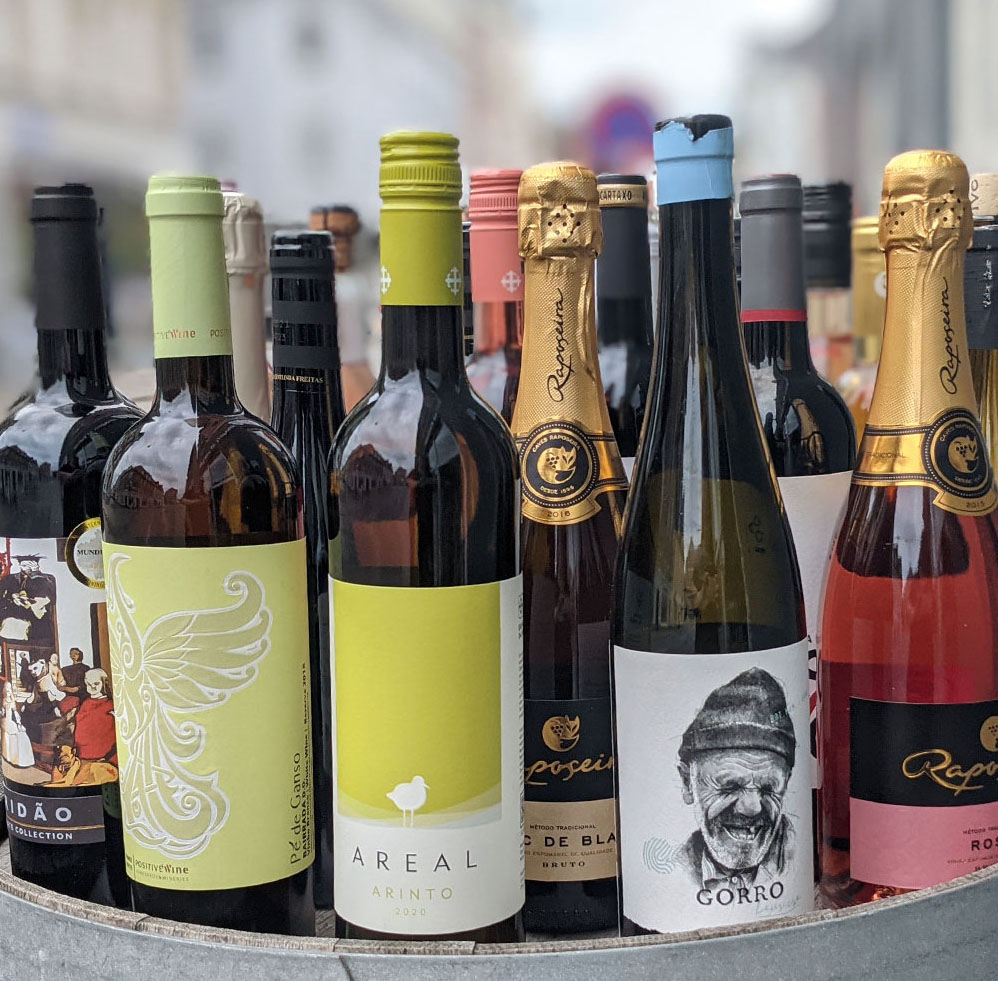
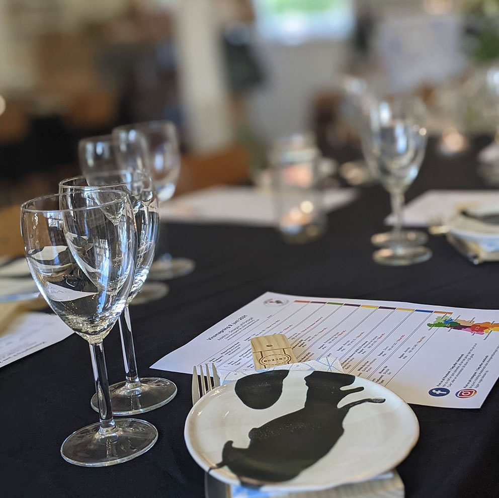

In this fascinating wine tasting class,
Christina,
the owner of Adelino,
will teach you about sourcing the best wine in Danish market and how to correctly taste them.
She will talk about the Portuguese wine, and the reason its world wide known and desired,
and more she will teach you about all secrets that makes Portuguese wine a creation that has no peers.

what you need to know
about the class
The wine tasting classes are based on Portuguese education for individuals with an interest in wine.
The training is offered by Adelino "smag af Portugal" www.adelino.dk, and has existed for many years.
It is recognized by the Danish ministry of agriculture & food.
A wine tasting usually offers tastings of 8 different wines, and has a duration of approx. 2-3 hours.
here you will be introduced to the exciting wine country of portugal, mixed with a bit of history and culture.
Tapas as a meal or snacks and small snacks, can be purchased.
You hear about the different wine regions, grapes and of course you also have to taste the wines.
Feel free to contact us with your ideas and wishes, and we will put together a proposal for you.

what you need to know
about the teaching
The unique thing about adelino classes that teaching goes in a way that is easy to understand and remember.
so you learn about all the factors that influence the wine, and you get wiser when it comes to wine.
Adelino's teaching ensure you a broad and basic knowledge of wine that you can use to have even better
experiences with wine in the future.
By taking a wine tasting class, you will be part of our wine tasting society,
where we exchange experiences, as well as have a social time with people who all
love to taste wines and share their experiences. In short, a long term relationship with friends and a lifetime of wine tasting!
People experiences
and satements from previous customers
"Portuguese evening with Adelino Vin was instructive, tasteful and very very cozy.
The atmosphere was relaxed, the content was exciting and light enough to be digested
across the table along with the delicious wine and food.
Christina dished up lots of goodies, and everything harmonized; there was simply nothing
missing, except maybe a little more space in the stomach :-)
In any case, I have not felt less like taking the trip to Portugal myself.
And the Pinkolino has already been enjoyed once since the event, and it will not be the last time."
Kristine, Staff Association Combiners - Combine
Thank you for a fantastic event with good wines, great food, exciting stories and nice relaxed and informal telling style.
Everyone I've talked to about the event has only good things to say, except maybe the day after was a little longer than a usual Friday.
Nils, Staff Association Offline - AAU IT
We were so lucky to join Vin og Tapas with Christina Da Silva from Adelino.
We had a super nice evening where we got around the taste of Portugal
Wines and port wines of different kinds, which could hit many different taste buds.
It was all served professionally with Tapas which went super well with what to drink.
We ended up ordering some of what we had tasted - and this is certainly not the last order.
More than full satisfaction from here.
Gitte, AARHUS TECH Staff Association

upcoming events
Theme Wine Tasting + Tapas
Theme wine tasting with tapas, with a focus on summerWe offer a cozy evening,
in our shop in Danmarksgade. Get introduced to the exciting wine country Portugal,
the different wine regions and the skilled wine producers we work with.
We must taste:
6 wines (bubbles white wine, rosé wine and red wine)
2 Port wines / Dessert wines For the tasting stay